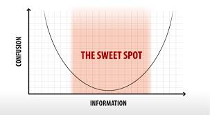

There is no such thing as a dumb question - just poorly posed.
August 13, 2015
There have been a few times when a or two question go unanswered in the DBC cohort chat. In cases like this, there are a couple of things that you have to consider such as your audience, question content, and response. As I am going to start the DBC onsite portion, it is important that I am expressing my questions in a concise and coherent manner.
Your Audience
Sometimes, the easiest explanation of why a question goes unanswered is simply because no one currently knows the answer. In the situation where everyone is following the same weekly curriculum, there is a good chance that the community just hasn't learned enough to answer your question yet. When asking a question, think about your audience and what knowledge they may have. If your question is constantly going unanswered, it may be a good idea to ask a bigger community. Overall, always consider who you are asking.
Content
It is also important to respect your audience's time. If your question is too verbose, some people may not spent the time reading it. Hence the popular meme, TL;DR (Too Long; Didn't Read). So always try to keep it concise. The other half of this would be if your question is too vague. The reader may not fully understand what you need help with. I have seen many instances where the first comment reads "I need more information". To sum up, it is important to try and make your question as detailed as possible while only including the key points. Also, when coding, it is helpful to include the code in question. This way, the reader can see exactly what you were doing and replicate your problem.
Your Response
Lastly, your interest in your own question is important. If someone gives you feedback, you should try to respond right away. This just shows that the question you asked was important to you and that you are looking into it. If no one answers after a good period of time (1-2 days if you can spare it), it would be good to send a prompt letting people know that you have not been helped yet.